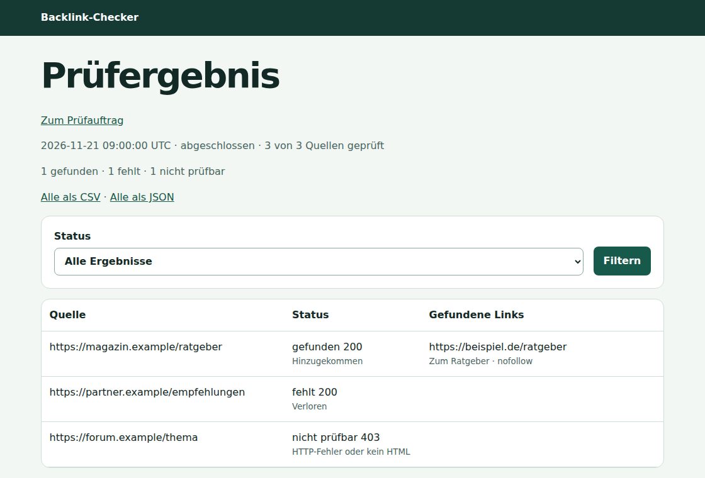
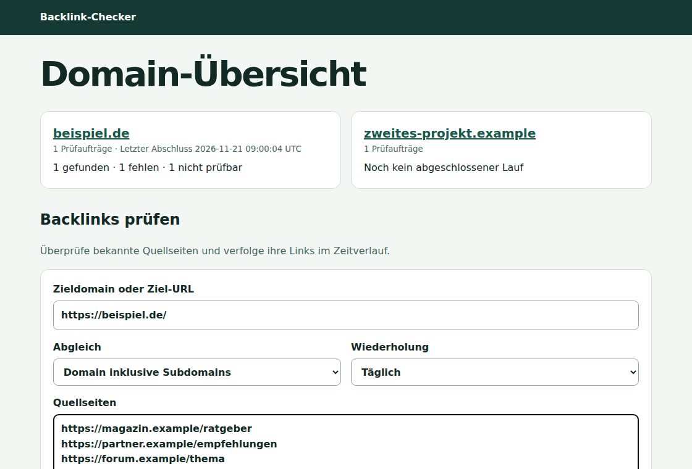

Backlinks prüfen und im Blick behalten.
Überprüfe bekannte Quellseiten gegen deine Domain. Verfolge neue und verlorene Backlinks und exportiere deine Prüfergebnisse.
Installieren
Installation
Mit Docker und Git kannst du die App direkt aus GitHub bauen und starten.
git clone https://github.com/immobilienmakler/backlink-checker.git && cd backlink-checker && docker compose up -d --buildÖffne danach localhost:8080. Für Portainer verwende den Pfad portainer.yaml im Stack aus dem Git-Repository. Das Registry-Image ist für AMD64 und ARM64 vorgesehen.
Dein erster Prüflauf
- Trage die Zieldomain oder eine exakte Ziel-URL ein.
- Füge bekannte Quellseiten ein, eine URL pro Zeile.
- Wähle das Prüfintervall und starte die Prüfung. Den Bericht kannst du als CSV oder JSON exportieren.

Die App prüft vorhandene Quellenlisten im ausgelieferten HTML. Für die Recherche nach unbekannten Backlinks kannst du eine Liste aus einem Backlink-Index verwenden.